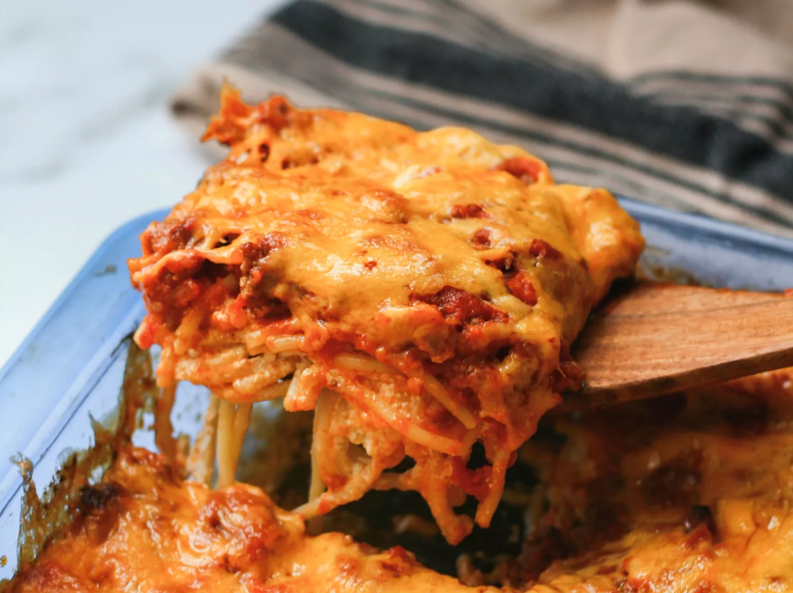

Million Dollar Spaghetti
You’ll find the full, step-by-step recipe below — but here’s a brief overview of what you can expect when you make million dollar spaghetti:
- the spaghetti in salted water, then drain and set aside.
- Cook the beef on the stove and discard the grease. Transfer to a bowl and mix in the spaghetti sauce.
- Prepare the baking dish, then spread half of the noodles in the bottom.
- Top with the mixture of cottage cheese, cream cheese, and sour cream.
- Cover with remaining spaghetti and butter.
- Pour the beef mixture over the spaghetti and spread in an even layer.
- Bake for 30 minutes, top with Cheese, and continue baking until the cheese is melted.
Wróć
